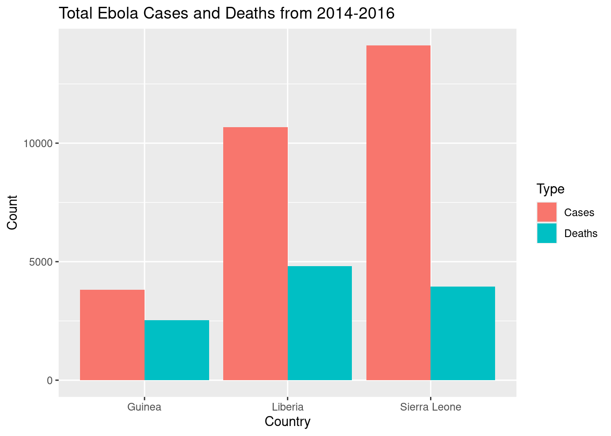
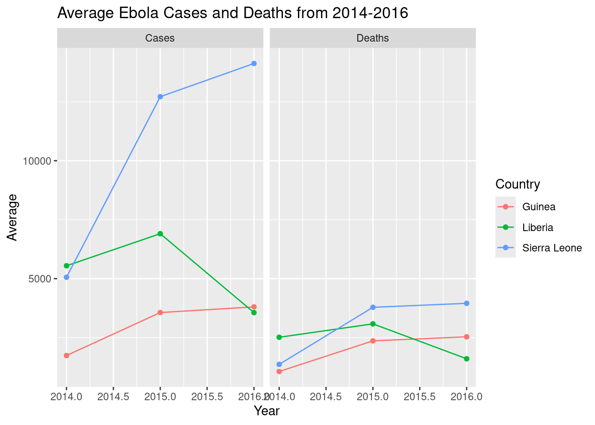
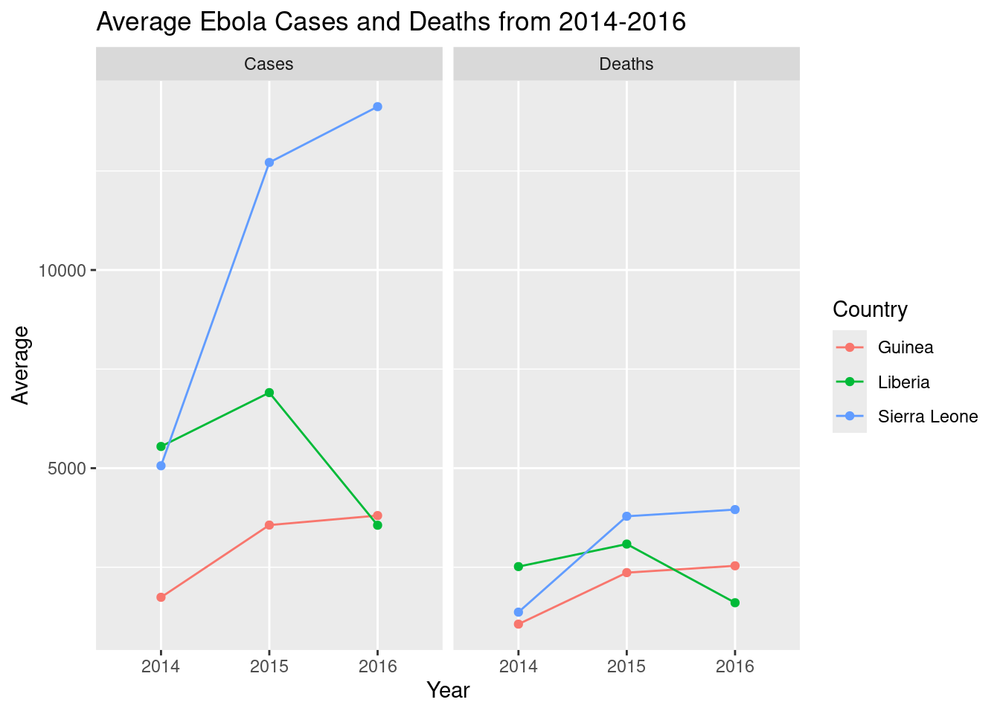

library(tidyverse)
ebola <- read.csv("your/path/to/ebola.csv", header = TRUE, sep = ",")Example Analysis: Ebola
Preamble
This script will loosely follow the template document: it is more meant for you to get an idea of one way to approach the data processing and visualization! This analysis will primarily focus on using tidyverse tools (i.e. dplyr and ggplot).
For this dataset, the main skills we want you to practice are:
- Working with dates: you can get a more fine-scale understanding of the data here by parsing out the
Datecolumn into year, month, and day. - Pivoting: notice that the count types are in separate columns (cases and deaths) – it’ll be easier to work with them if they were consolidated.
The research questions we will address are:
- Easier: How many cases and deaths in total were recorded by each country from 2014-2016?
- Harder: By country, how did the average number of cases and death change each year?
1. Load data and libraries
2. Format the Data
Pre-processing
First, let’s just focus on our 3 countries of interest and use filter() to trim down our dataset, saving the output in a new object. We will also rename some of the columns to more manageable names, since they are currently pretty unwieldy in the raw dataset.
# rename columns
ebola_trimmed <- ebola |>
filter(Country %in% c("Guinea", "Liberia", "Sierra Leone")) |>
rename(Cases = Cumulative.no..of.confirmed..probable.and.suspected.cases,
Deaths = Cumulative.no..of.confirmed..probable.and.suspected.deaths)Skill: Working with dates
Let’s parse out the Date into separate Year, Month, and Day columns using mutate() with the following steps:
- Convert the data in
Datefrom characters into dates usingas.Date().- Because of the way our data is written, the values in
Datewill automatically take on the%Y-%m-%dformat.
- Because of the way our data is written, the values in
- Create
Year,Month, andDaycolumns by extracting the relevant part of the date object usingformat(). - Simultaneously, we will also convert the parsed dates into numeric using
as.numeric(), becauseformat()extracts information as strings/characters.
(Remember that this is just one approach to working with dates!1)
# extract dates
ebola_trimmed <- mutate(ebola_trimmed,
Date = as.Date(Date), # convert to dates
Year = as.numeric(format(Date, "%Y")), # extract different parts of the date
Month = as.numeric(format(Date, "%m")),
Day = as.numeric(format(Date, "%d")))Skill: Pivoting
This data doesn’t quite follow tidy data principles. We have two types of counts, Cases and Deaths, spread across the column headers: Cases and Deaths could be considered to be different values of a variable for the “type” of count. So, we will consolidate them with pivot_longer(), putting these old column names into a new column, Type, and cell values into another column, Count.
# pivot
ebola_trimmed <- pivot_longer(ebola_trimmed,
cols = c("Cases", "Deaths"), # select columns to be pivoted
names_to = "Type",
values_to = "Count")3. Visualize the Data
Easier
Research question
How many cases and deaths in total were recorded by each country from 2014-2016?
We don’t need to do anything further to the data: since we want to show totals, a bar graph showing the counts for each region should suffice.
# plot total counts
ggplot(ebola_trimmed, aes(x = Country, y = Count, fill = Type)) +
geom_col(position="dodge") +
labs(title = "Total Ebola Cases and Deaths from 2014-2016")
Harder
Research question
By country, how did the average number of cases and death change each year?
We can use summarize() to generate some summary statistics. Since we want to look at trends over time, a line plot would be useful.
# calculate stats by country, type, year
ebola_stats <- ebola_trimmed |>
group_by(Country, Type, Year) |>
summarize(Average = mean(Count))
# plot it
ggplot(ebola_stats,
aes(y = Average, x = Year, color = Country)) +
geom_line() + geom_point() + # (line is easier to see with points)
facet_wrap(~Type) +
labs(title = "Average Ebola Cases and Deaths from 2014-2016")
This looks a little ugly with the decimal points: we can clean it up by converting Year to a factor. However, this also confuses R in geom_line(), and it can’t figure out which points to connect together: so, to clarify, we’ll also specify the group variable in aes().
# adjust it
ggplot(ebola_stats,
aes(y = Average, x = as.factor(Year), color = Country, # change Year to factor
group = Country)) + # specify grouping variable
geom_line() + geom_point() +
facet_wrap(~Type) +
labs(title = "Average Ebola Cases and Deaths from 2014-2016",
x = "Year") # relabel the x-axis
Code only
Code only
(Finalized code adjustments shown)
# read in data, load libraries
library(tidyverse)
ebola <- read.csv("your/path/to/ebola.csv", header = TRUE, sep = ",")
# wrangle
## filter countries and tidy column names
ebola_trimmed <- ebola |>
filter(Country %in% c("Guinea", "Liberia", "Sierra Leone")) |>
rename(Cases = Cumulative.no..of.confirmed..probable.and.suspected.cases,
Deaths = Cumulative.no..of.confirmed..probable.and.suspected.deaths)
## extract date information
ebola_trimmed <- mutate(ebola_trimmed,
Date = as.Date(Date), # convert to dates
Year = as.numeric(format(Date, "%Y")), # extract different parts of the date
Month = as.numeric(format(Date, "%m")),
Day = as.numeric(format(Date, "%d")))
## pivot
ebola_trimmed <- pivot_longer(ebola_trimmed,
cols = c("Cases", "Deaths"), # select columns to be pivoted
names_to = "Type",
values_to = "Count")
# visualize
## easier: plot total cases
ggplot(ebola_trimmed, aes(x = Country, y = Count, fill = Type)) +
geom_col(position="dodge") +
labs(title = "Total Ebola Cases and Deaths from 2014-2016")
## harder: plot average cases
### calculate stats
ebola_stats <- ebola_trimmed |>
group_by(Country, Type, Year) |>
summarize(Average = mean(Count))
### plot
ggplot(ebola_stats,
aes(y = Average, x = as.factor(Year), color = Country,
group = Country)) +
geom_line() + geom_point() +
facet_wrap(~Type) +
labs(title = "Average Ebola Cases and Deaths from 2014-2016",
x = "Year")